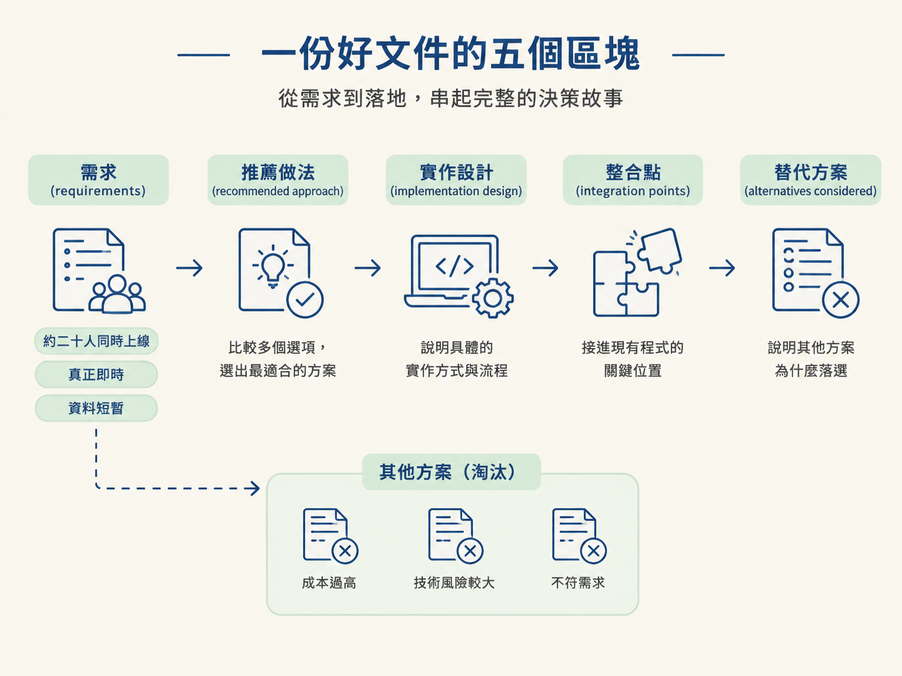
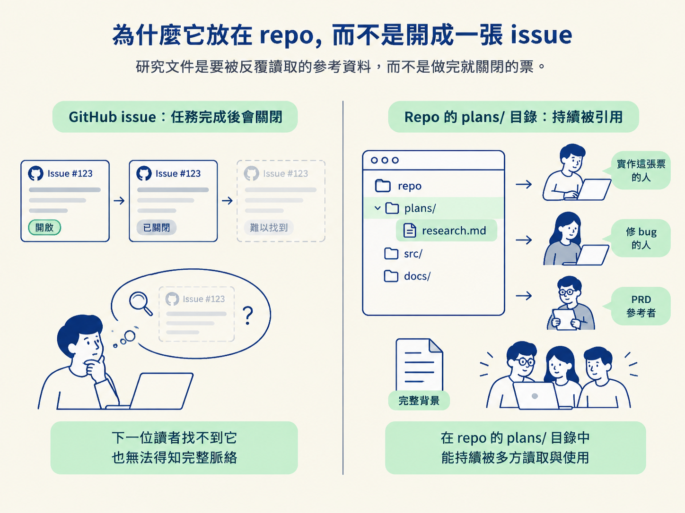
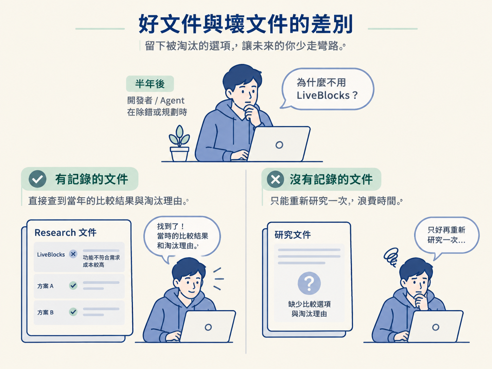

說出一份好的 research 文件應包含哪些區塊，並理解它為什麼應該放在 repo 的 plans/ 目錄，而不是只開成一張 GitHub issue。
上一節你跑完一次研究，手上可能已經有一份約三百行的文件。但先別急著把它當成寶藏：同樣是三百行，有些文件塞滿參考連結與服務介紹，讀完仍然不知道該選哪個；有些文件則條理清楚，下一個人可以直接拿來規劃實作。
差別其實不在長度，而在骨架。好的 research 文件不是把查到的資料全部堆在一起，而是把需求、選擇、設計與取捨串成一條看得懂的路徑。
這一節要把那份文件拆開，看看一份真正有用的 research 文件裡到底應該放什麼，也一起釐清一個常被忽略的問題：為什麼它要存在 repo 的檔案系統裡，而不是開一張 GitHub issue 來容納？
一份好的研究文件，其實很像一份架構決策紀錄（ADR，Architecture Decision Record）。它不只記錄「最後選了什麼」，也留下「為什麼選它」以及「當時還考慮過哪些方案」。
它通常包含五個核心區塊，順序也大致如下：
| 區塊 | 它回答的問題 | 內容從哪裡來 |
|---|---|---|
| 需求（requirements） | 我們到底要滿足哪些條件？ | 研究過程中，你回答的那些品味問題 |
| 推薦做法（recommended approach） | 最後的結論是哪一個？ | 比較完各種選項後選定的方案 |
| 實作設計（implementation design） | 具體要怎麼做？ | agent 為選定方案提出的實作設計 |
| 整合點（integration points） | 現有程式碼的哪些地方需要調整？ | 它探索你的 stack 後找出的接入位置 |
| 替代方案（alternatives considered） | 為什麼不是其他選項？ | 被比較掉的服務與淘汰理由 |
把這五個區塊串起來，就是一個完整的故事：因為有這些需求，所以我們比較了幾個選項，最後選定其中一個；接著說明打算怎麼實作、要接進現有程式的哪些位置；至於其他方案為什麼落選，也一併留下理由。

這樣一來，下一個接手的人（包含幾週後的你自己）讀完文件就能理解整個決策，不必把當初的研究重新跑一遍。它就像替探索過程留下地圖，而不是只在終點插一面旗子。
其中，「需求」這一欄特別重要。研究過程中，agent 反問你的那些問題，答案會直接變成這裡的條目。像是「大約二十人同時上線」、「要真正的即時」、「資料是短暫的」，都屬於需求。
需求之所以重要，是因為後面的每個取捨，都要拿它們當尺。如果需求是省錢，免費額度就是加分項；如果需求是毫秒級同步，那麼能不能達到這個速度，才是判斷方案的重點。
很多人的第一個直覺是：研究也是工作，那就開一張票吧。但研究文件和工作票的性質其實不同。研究文件是一份要被讀的參考資料，而不是一件要做的事。
issue 的壽命通常跟任務綁在一起：任務完成，issue 就關閉；issue 關閉之後，也會逐漸淡出大家的視線。研究文件的壽命則應該比單一任務更長，因為它可能會被很多張票反覆引用。
實作的那張票需要讀它，之後修 bug 的人可能需要讀它，當初的 PRD 也可以引用它。如果研究結果只躲在一張已完成的 issue 裡，後來的人就不容易發現這份資料。
把它放在 repo 的 plans/ 目錄，價值就很直接：接下來要動手的 agent，在自己的工作目錄裡就能看到它。它不需要你重新貼一段對話脈絡，也不必另外解釋「事情當初是怎麼發展的」；打開檔案，就能取得完整背景。

這也是研究使用檔案、而不是只留在對話裡的原因。對話關掉之後容易消失在脈絡之外，檔案則能被之後的人反覆讀取。
它還有一個附加價值：原始的研究紀錄，對之後修 bug 很有用。當系統出問題時，你可以回頭查看當初為什麼選這個方案、它有哪些限制，而不必兩手一攤、重新查一遍。決策的來龍去脈，本身就是除錯時的重要線索。
把前面的原則放進一張對照表，就更容易看出一份 research 文件應該追求什麼：
| 一份有用的研究文件 | 一份沒用的研究文件 |
|---|---|
| 先寫清楚需求，後面的每個取捨都能對應回去 | 需求不明，選項之間沒有共同的判斷標準 |
| 有明確的推薦做法，也說明選擇理由 | 每個選項都列出來，卻沒有結論 |
| 附上實作設計與整合點 | 只有服務介紹與官方連結 |
| 記下被比較掉的選項與原因 | 只留下最後的贏家，看不出取捨過程 |
| 放在 repo 裡，之後可以反覆讀取 | 鎖在一張關掉的 issue 或一段對話裡 |
「記下被比較掉的選項」尤其容易被忽略。很多人只留下最後的贏家，覺得其他方案都只是雜訊。但真正有價值的資訊，往往也藏在輸家身上。
例如半年後有人問：「為什麼不用 LiveBlocks？」如果文件留下了當初的比較結果，就能直接找到答案；否則大家只好因為當時沒有記錄，再重新研究一次。

一份好的 research 文件像一份 ADR，包含需求、推薦做法、實作設計、整合點，以及被比較掉的替代方案。需求來自研究時你回答的品味問題，是後面每個取捨的判斷標準。它放在 repo 的 plans/ 裡，因為它是要被反覆讀取的參考資料，而不是一張做完就關閉的票：接手的 agent 能在工作目錄裡發現它，之後修 bug 時也能回頭查當初的決策。
到這裡，你已經知道一份結構完整的研究文件應該長什麼樣子了。但先別把它當成永久資產，它會過期。
如果有一天你換掉了當初選的服務，或那個 SDK 已經改版，原本的文件反而可能變成阻礙。下一節要談的，正是它的生命週期：什麼時候該做研究，以及什麼時候該把文件刪掉。